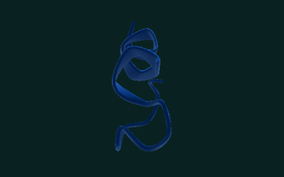
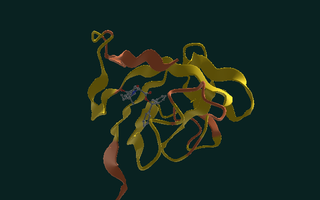
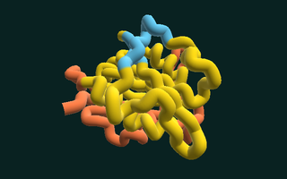
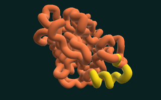
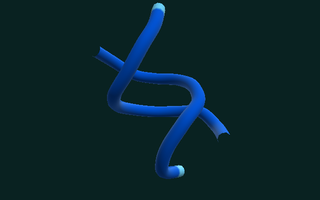
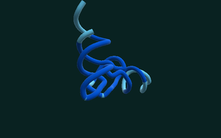

Trp-cage
Twenty amino acids — one of the smallest proteins that folds itself, and it does it in microseconds.
tt-bio runs Boltz-2 and eight other biomolecular models on Tenstorrent accelerators. This page is about what those models do, the research they come from, and how a demo that folds six known structures makes any of it visible.
If you have never met this field before, this is the only section you need. Everything else on the page assumes it.
A protein is a chain of amino acids — twenty kinds of link, in an order your DNA writes down. (One link in the chain is a residue, which is the word the rest of this page and the demo itself use for it.) The chain does not stay a chain. It folds into one specific three-dimensional shape: the smallest proteins get there in millionths of a second, larger ones take considerably longer, and some need other proteins to help them do it.
That shape is what the protein is. It decides what the protein grips, what it cuts, what it switches on, and whether a drug molecule can get hold of it. Two proteins with almost the same sequence and different shapes do entirely different things. Get the shape wrong and you have learned nothing about the biology.
Reading the sequence is easy and has been for decades. Finding the shape is the hard part. For most of fifty years it meant growing a crystal of the protein and firing X-rays at it — months of laboratory work for a single structure, and some proteins never cooperate at all. Predicting the shape from the sequence alone was one of biology's long-standing open problems. The progress made on it with deep learning was recognised with the 2024 Nobel Prize in Chemistry.
The models in this page's story are a separate, open lineage from that work — built at MIT, published, and freely licensed. tt-bio is what runs them on Tenstorrent hardware.
The model starts from noise — atoms scattered at random — and pulls them, step by step, toward an arrangement it judges plausible. Each step is a small correction, and after a couple of hundred of them the cloud has become a structure.
The demo shows those steps as they happen rather than the finished answer, because the working-out is the interesting part and because it is honest: what is on screen was computed a few feet away, in the order you are seeing it.
Every structure in the demo is coloured residue by residue, using a confidence score the model produces alongside the shape. Deep blue () is a part the model is confident about. Orange () is a part it is guessing at.
This matters more than it looks. A prediction that comes with no measure of its own uncertainty is difficult to use for anything serious, and a demo that hid the uncertainty would be showing something prettier than the truth. So the booth does not hide it, and the result is not the one you would guess: the molecule it is most sure about is the DNA double helix, which comes out deep blue almost end to end. The ones it is least sure about are the three big enzymes — trypsin is orange across almost all of its length. (The smallest protein here, Trp-cage, comes out blue too; size and irregularity are what cost confidence, not being a protein.)
That ordering makes sense once you see it. A DNA duplex is a regular, repeating structure that does the same thing every rung. A working enzyme is a large, irregular object with floppy loops that genuinely move, and the model is right to be less certain about where they sit. The colours are not decoration; they are the model declining to overstate what it knows.
Once you know the ramp, you can read every screenshot on this page. The rest of the site uses the same four colours for the same reason.
The demo folds the same six structures on a loop. None of them is a discovery — every one has been solved in a laboratory, and that is the point: the known answer is what makes the prediction checkable.
They were chosen to need no database lookup over the network — these models normally begin by searching public databases for sequences related to the one you gave them, and a conference hall has no reliable internet — and to be things a person can be told the point of in one sentence.

Twenty amino acids — one of the smallest proteins that folds itself, and it does it in microseconds.

The molecular lock that anti-rejection drugs are shaped to pick, so a transplanted organ survives.

Every dividing cell needs it to build new DNA — which is why a classic cancer drug jams it shut.

Built switched off by the pancreas, armed in the gut, where it cuts up the protein in your meal.

The double helix, twelve rungs of it — one of the two things this booth folds that are not proteins.

The go-between: it reads three letters of the genetic message and carries the matching amino acid.
Times are measured on a Blackhole chip with the model already loaded. A cold start costs more; the booth keeps the model resident so that a visitor's pick almost always lands warm.
The three longest targets show a range, and the reason is specific to this machine: two of its four chips settle to a lower clock about fifteen minutes into a session — they run a few degrees hotter at idle too, so it is where they sit in the chassis rather than anything about the work. A fold takes whichever chip is free, so the card promises the band. The short targets finish before a chip has time to warm up and are unaffected.
The stripe on each card is that molecule's measured confidence, taken from the picture below it rather than asserted: Trp-cage, the DNA duplex and the tRNA resolve deep blue, and the three enzymes are substantially orange.
Look closely at FKBP12 and DHFR and there is a second molecule in the picture, drawn as balls and sticks in the usual element colours. Three of these six fold a bound ligand alongside the protein — and DHFR's is methotrexate, the cancer drug its card describes. The booth is not folding the enzyme and then illustrating the drug: both are predicted together, in the same pass, because where a drug sits in its target is the question worth asking.
tt-bio is not a product that was planned. Its git history is public and it reads like what it is: one person, starting from someone else's research code, on New Year's Day.
The first commit is Jeremy Wohlwend's, and it says boltz-1.
Everything that follows descends from the Boltz models built and
published by his group at MIT.
add tenstorrent accelerator
Moritz Thüning, then a computer science student at the Technical
University of Munich, starts porting it. The first two commits are
add tenstorrent accelerator and
add tenstorrent pairformer. He had found the project
through the Tenstorrent community — AI Foundry later titled
their write-up of the arc
“From Joining the Discord to Drug Discovery”.
He presents “TT-Boltz: AlphaFold 3 on Tenstorrent Wormhole” at the AI Plumbers conference — to the community that got him started.
Porting Boltz-2 to Tenstorrent Accelerators, submitted at TUM's Chair of Computer Architecture and Parallel Systems.
Four days after ESMFold2 lands, the project is renamed. The commit message gives the reason, and it is not a rebrand:
The project now runs ESMFold2 alongside Boltz-2 and BoltzGen, so the
boltz-specific name no longer fits.
— commit Rename project tt-boltz -> tt-bio
Since joining Tenstorrent, Moritz has expanded tt-bio well past its starting point: BoltzGen, ESMFold2, Protenix-v2, OpenFold3, OpenDDE, SaProt and RFD3 all land during 2026.
As of v0.6.2 the repository holds 2,181 commits. 1,744 of them are his.
This distinction is worth being exact about, because the interesting claim depends on it. The models are published research from a group at MIT. tt-bio is an implementation of that research on different hardware. Both are real work; they are not the same work.
The lineage starts with AlphaFold 3's general architecture, which showed that a single model could predict the joint structure of proteins, nucleic acids and small molecules together rather than proteins alone. What followed in this line was open:
The word in Boltz-1's title is the one that matters here. A model you can read, run and check is a different kind of object from one you can only query, and it is the reason a student could port it to unfamiliar hardware at all. tt-bio exists downstream of that decision.
If you use tt-bio or these models in research, the repository's Cite section lists the papers to credit — including the ones behind the models this page does not have room to describe.
tt-bio started as a Boltz-2 port. As of v0.6.2 it runs considerably more than that, all through one CLI and all on Tenstorrent hardware.
| Model | What it is for |
|---|---|
| boltz2 | Structures and binding affinity — proteins, nucleic acids, ligands, modified residues |
| protenix-v2 | AlphaFold3-family folder for protein / RNA / DNA / ligand complexes. This is what the booth folds with. |
| openfold3 | AlphaFold3-family folder for protein / RNA / DNA polymers, with optional templates |
| esmfold2 | Single-sequence folding — no multiple-sequence alignment needed |
| opendde | Antibody–antigen co-folding |
| boltzgen | Binder design — proteins, peptides, nanobodies, antibodies against a target |
| rfd3 | All-atom design: binders, motif scaffolding, nucleic-acid binders |
| saprot | Structure-aware protein language modelling |
| esmc | Protein language-model embeddings — 300M, 600M and 6B |
Most of that arrived in 2026, after the project had already been renamed once for outgrowing its own scope.
Everything above is prediction: here is a sequence, what shape does it take? The harder and more consequential question runs the other way. Here is a target — a protein implicated in a disease. What new molecule would bind to it?
That is binder design, and a binder is what a drug usually is. tt-bio runs
it: tt-bio design drives BoltzGen for protein, peptide,
nanobody and antibody binders, and RFdiffusion3 for all-atom design
including motif scaffolding.
Boltz-2 is a state-of-the-art model that builds on the general architecture of AlphaFold 3, predicting biomolecular structures and binding affinities. BoltzGen is a system that builds on Boltz-2 and designs protein binders (potential drugs) to biomolecular targets. We implement both systems on Tenstorrent hardware to make drug discovery more open, more efficient, and cheaper. — Moritz Thüning, FOSDEM 2026
The booth does not do any of this. It folds six known structures on a loop. Designing a candidate molecule is not a thing to watch for thirty seconds at a conference stand — it is a campaign, run against a target someone has a reason to care about, and the result has to be made and tested in a laboratory before it means anything.
It is in this page because it is the part with consequences, and because a demo that let you believe folding a known protein was drug discovery would have misled you about the whole field.
Most of what runs on AI accelerators today is a transformer doing language. Structure prediction is a different shape of problem: its expensive operations act on pairs of residues, so cost grows with the square of the sequence, and the heaviest pieces grow with the cube. It was not the workload anyone had in mind.
That is what makes the port interesting rather than routine. A student took a research codebase written for GPUs and made it produce correct structures on a dataflow architecture — and correctness is the bar that matters, because a structure prediction that is fast and subtly wrong is worse than no prediction.
These are our numbers, from this demo, on two Blackhole p300c boards — four chips in total, since each board carries two.
| Measurement | Result |
|---|---|
| Four chips vs one | 3.70×, not 4× — two chips throttle to 906 MHz under sustained load |
| Cold start | All four workers reach “model resident, chip open” in 4.8 s |
| Two-hour soak | 2,143 folds, zero errors, peak 83.6 °C |
| Recorded loop | 59 folds across four chips in 150 s |
The 3.70× is the honest figure and we publish it rather than the round one. Four chips do not make a single fold four times faster: one fold is one chip, which is tt-bio's own documented limit and not something this demo works around. What four chips buy is four proteins at once, and a shorter wait for whoever is standing there.
The booth is a GTK4 application with no browser in it. The compute runs in a separate process holding the chips; the two talk over a socket, so a wedged card cannot take the screen down with it.
| The booth | Behaviour |
|---|---|
| It does | Stream the model's real denoising trajectory, one step at a time, straight from the sampler on the chip |
| Draw the finished structure as a cartoon — helices as ribbons, sheets as arrows — the representation used in every paper. The model's output carries no secondary-structure records, so which residues are which is worked out from the geometry | |
| Draw any bound ligand beside it, in element colours | |
| Demonstrate its own instruments. Left alone, it opens the diagnostics tap and the Tensix panel, holds each long enough to read, and puts them back — nobody has to be told a keyboard shortcut | |
| Colour every residue by the model's own confidence, including where that is unflattering | |
| Fold on four chips at once, one molecule per chip, and show all four if you press Q | |
| Run unattended all day, and hold the last real structure rather than showing a blank screen | |
| It does not | Discover anything. Every structure it folds was solved in a laboratory first |
| Design molecules. That is a different job and it does not happen here | |
| Fabricate a frame. If nothing has been computed yet, nothing new is drawn |
That last one is the rule the rest of the design follows from. The booth's only real asset is that what you are watching is true, and every shortcut that would have made it prettier — a smoothed trajectory, a cached fold, a filled-in gap — would have spent that asset for nothing.
Ctrl+G takes a cloud of random points and pulls it into the Tenstorrent logo by gradient descent on a signed distance field. The arithmetic runs on the accelerators, in the same framework a fold uses, and streams back over the same protocol. It comes out slightly differently every time.
The booth labels it “Not a fold”, in those words. It is a decorative use of the hardware and saying so is the whole point: a demo that asks you to believe what it shows you cannot let a pretty thing pass as science because it happens to look like the real output.
The playlist quietly includes a DNA duplex — twelve rungs, and both strands spell CGCGAATTCGCG, because each read backwards is the other. The six in the middle, GAATTC, are the mark that EcoRI — one of the first gene-cutting enzymes ever put to work — recognises and cuts.
And a transfer RNA, which is the molecule that connects the other two: three bases at one end read one word of the genetic code, and the far end carries the amino acid that word calls for. Fold all three and you have watched the path from a gene to a protein, one step per card.